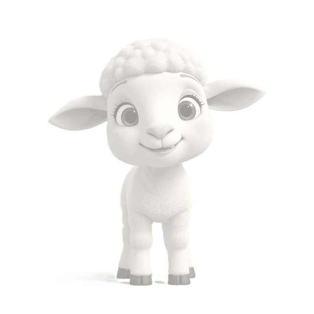
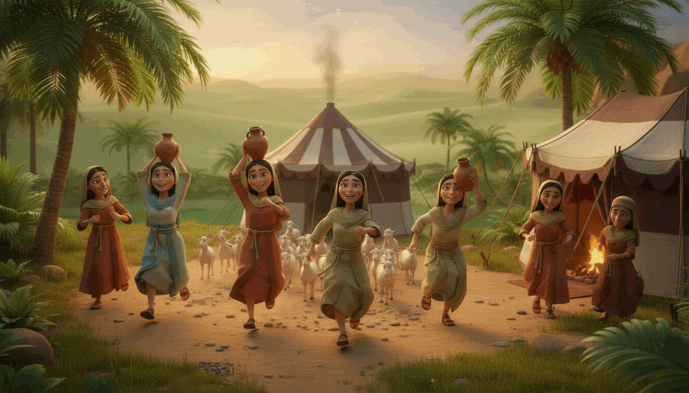
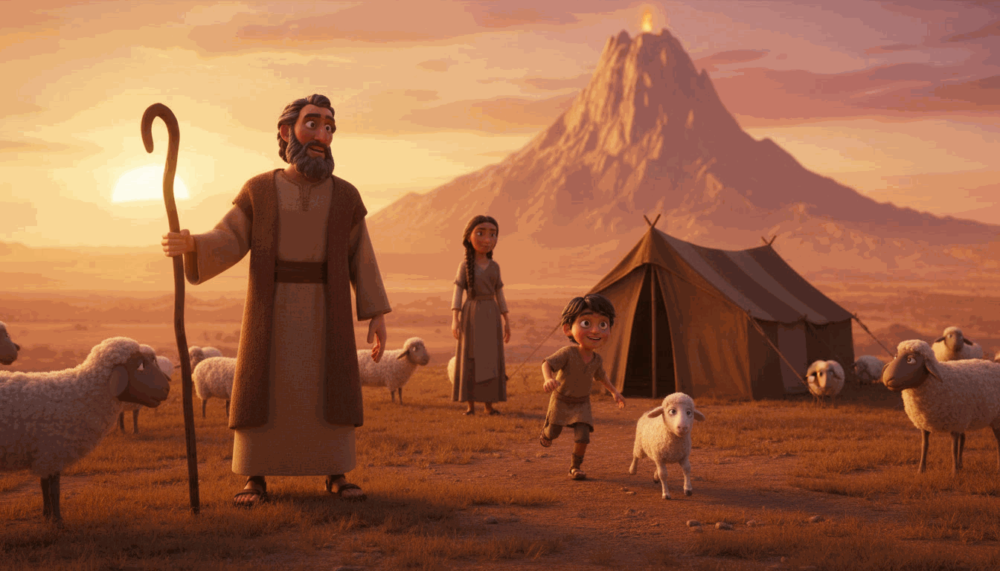

Please enter the access code from your Etsy purchase README to begin the adventure.
Your code is printed on the "Getting Started" page inside your Etsy bundle.
Lost your code? Email janerasika20@gmail.com
Moses' Deadly Escape
Interactive Bible Adventure
Stand up for the sisters. Water the flock. Find your new family.

SCENE 3 - THE WELL OF MIDIAN
The Story So Far
Moses has crossed the burning desert and arrived at last in Midian. Tired
and thirsty, he rests beside an ancient well - and hears the cries of
seven young shepherdesses being driven off by rude shepherds. Moses stands
up for them, draws water for their flock, and does not know it yet, but
God is preparing a new family for him in this peaceful land.
"Moses got up and came to their rescue and watered their flock. When the girls returned to Reuel their father..."
- Exodus 2:17-18 (NIV)
Choose Your Difficulty
Please choose a difficulty level first!
Easy: 4 min - Medium: 3 min - Hard: 2 min
Loading game assets... 0%
Preparing Midian...
Loading sprites and music. This usually takes a few seconds on Wi-Fi, longer on cellular.
0%
Tip: pinch-zoom won't work in the game — the canvas auto-scales for you.
Loading...
CINEMATIC OPENING
1 of 4

Loading...
CINEMATIC CLOSING
1 of 5

Loading...
EPILOGUE
1 of 3
♥♥♥
00/0▲ 0/5💎 0/3🐑 0/03:00
StartExitCheckpointSolvedYouShepherdTreasure
Tap anywhere or MAP to close
Exodus 2:13-15a (NIV)
MIDIAN MAP
MosesCheckpointScoutExit
x:0 y:0
[?]
How to Play
Loading...
1 of 3
...
...
Caught!
...
Paused
The adventure waits for you.
Tip: Solve the well-side checkpoints to earn blue crystals, then cross the stream to rescue Jethro’s daughters and reach his tent!
CHECKPOINT
Answer to pass!
💡 Bible Clue:
CRYSTAL STEPPING-STONE
Crystal 1 of 3!
Two more crystals to build the river crossing.
*** God had a plan for Moses. ***
And God has a plan for you, too.
SCENE 3 COMPLETE
Moses has reached Jethro's tent in Midian!
A Truth Card has been added to your collection!
★ FINAL TRIAL ★
Save Jethro’s Daughters
The sun is sinking over Midian.
tap to begin
Moses has found a new home!
Well done, brave explorer!
You are brave just like Moses.
BRAVE EXPLORER
★★★
0 Score0/0 Treasures3/3 Hearts
★ 1 Truth Card Collected ★
God had a plan for Moses.
Jethro welcomes Moses into his tent. Moses marries Zipporah, and God names their firstborn Gershom - "a stranger here." (Exodus 2:22)
Tap SHOO! fast to scare the wolf away from the sheep!
~ A TREASURE CHEST APPEARS ~
Moses finds a hidden chest!
★ Truth Card Collected! ★
~ RACE TO WATER THE FLOCK ~
Beat the Rude Shepherds — fill all your pots first!
📱↻ Turn your phone sideways for easier aiming
📱↻Rotate for bigger play area
🏺 Your pots: 0/5Rival: 0/5 🏺
Drag from Moses to aim — fill every pot!
"Moses got up and came to their rescue and watered their flock." — Exodus 2:17
🏺 How to Water the Flock
Fill all your water pots before the rude shepherds do!
👆1. Drag & Let GoAim water into your pot
✋2. Tap SHOO!When a shepherd grabs your pot
🏺3. Fill Them AllBeat the rude shepherds to it
PAUSED
📱↻
Turn your phone sideways
Landscape gives you a much bigger play area to aim, splash water, and SHOO the rude shepherds away!
Moses lost the race!
The rude shepherd watered his flock first.
🎉 You watered the flock!
Perfect!
~ RESCUE THE DAUGHTERS ~
Drive off the rude shepherds!
📱 Tip: hold your phone upright for bigger figures!
MOVE MOSES
👧 7/7💰 0Driven off: 0
Tap a lane to move Moses, tap a weapon to throw it!
"Moses got up and came to their rescue." — Exodus 2:17
PAUSED
💔
The shepherds drove them off!
They carried the daughters away.
🎉 The daughters are safe!
Heroic!
Toast
~ MIDIAN · THE WELL ~
🛡️ Rescue the Daughters
Rude shepherds have stormed the well and are driving Jethro's seven daughters away! Stand beside Moses and hold the line — don't let a single shepherd reach the girls.
👆▲▼Move MosesTap a lane, swipe, or use ▲ ▼ / arrow keys
🏺Throw weaponsTap a weapon to drive shepherds back — each throw spends 💰 from your purse (down shepherds to refill it!)
👧Save the girlsStop every shepherd before he reaches a daughter
"Moses got up and came to their rescue and watered their flock." — Exodus 2:17
⚔️ Choose your weapons
⭐ 0💰 0 treasure
Pick your full squad — 0/5 chosen · tap a chosen weapon to swap it out